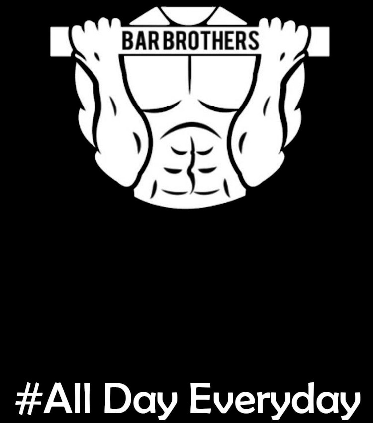

Início
CALISTENIZANDO é um projeto feito por Tiago da Rocha que visa repassar e incentivar o começo de treinos de CALISTENIA(treino com o próprio peso do corpo). Iniciou o projeto em 2022 por volta de Maio e tocou o projeto realmente em Julho. Com pequenos vídeos em plataformas como TikTok, Kwai e Instagram seu crescimento foi moderado, terminando o ano com o total de 8.000(não exatamente) seguidores em todas as plataformas.
- TikTok- com mais ou menos 6.000 seguidores;
- Foi o que mais curtiu.
- Instagram- com mais ou menos 1.500 seguidores;
- Curtiu mas não curtiu muito ter de entregar bastante story.
- Kwai- com mais ou menos 1.000 seguidores.
- Descurtiu completamente esta plataforma.
Seu propósito era apenas postar e ver qual seria o potencial de entrega em si das plataformas. Resultou em opiniões como: o TikTok entrega bem de mais porém tem de haver muita entrega de vídeo também; o Intagram é necessário muita interação nos storys até porque as pessoas gostam de enviar mensagens; o Kwai eu não entendi foi nada ou é uma merda mesmo.
Evolução Na CALISTENIA
Como muitas pessoas, pode-se dizer que Tiago era um jovem sedentário, não muito voltado para atividade física por mais que praticasse Jiu-Jitsu. Acima do peso e decepcionado com seu desempenho físico, sempre se forçava a comer melhor ou buscar informações(a maioria desinformação para acreditar que existe um milagre) mas nunca começava nada. Seu irmão um belo dia o convenceu a começar uma rotina de exercícios nas férias. Rotina essa que incluía acordar cedor, correr e fazer um circuito, comer menos e dormir cedo, Tiago não exitou.
Ao passar de 3 meses seu peso diminuiu de 80kg para 59kg. Estava louco de felicidade, felicidade essa pois no meio dessa jornada seu irmão o incentivou a fazer sozinho, acordar sozinho, se incentivar sozinho e logo logo pegou gosto e tesão pelo esporte. Pesquisando e sedento pela procura de exercícios descobriu que sair de 0 flexões para 10 flexões, não era nada! Se deparou no YouTube com novos exercício e um novo esporte. CALISTENIA.
Inspiração Maior
Se encantou e se aprofundou mais em tecnicas e descobriu também os famos movimentos, e disse que era com toda certeza o que queria fazer. Assistiu um dos vídeos que mais o incentivou até o dia de hoje. Vídeo esse do canal Bar Brothers.
Essa é a logo mais irada que existe!
Foi se aprofundando nos nomes dos exercícios e movimentos, começando a treinar com seu irmão que gostava do esporte mas nunca tinha se aprofundado para começar a fazer. Os dois saindo de 0 barra fixa e poucas flexões se sentiram iguais e de pouco a pouco conquistaram a primeira barra fixa.
Logo se separaram e começaram a fazer sozinho, mas nunca pararam de fazer. Tiago evoluiu de mais e se dedicou a fazer movimentos. Movimentos estáticos e movimentos dinâmicos é a maneira de diferenciar os movimentos da CALISTENIA e ele queria atingir o movimento mais difícil da CALISTENIA. A FULL PLANCHE.
Movimento simplesmente magnífico!
Ainda não atingiu seu objetivo mas sabe muito bem que quando conseguir, não vai parar. Entendeu que CALISTENIA não é só um esporte, não é so fazer exercícios ou chegar a um shape legal, não é apenas força. Pode mudar você, seu modo de ser, seu modo de pensar, saberá o que é a real diferença entre motivação e disciplina. Me propus ir além de apenas postar vídeos curtos e decidi ajudar esse esporte tentando levar a mais e mais pessoas, pessoas que talves não conheçam esse desafio. CALISTENIA é um estilo de vida!
Se você se identificou e sentiu que essa pode ser uma boa jornada então eu indico dar uma espida nas plataformas em que eu mais atuo. E obrigado pelo tempo que dedicou a minha história e a história da CALISTENIA em minha vida.
Redes Sociais
A seguir você será direcionado para o canal do YouTube que trata a respeito de exercícios e treinos de CALISTENIA do Tiago da Rocha clicando em: Calistenizando
A seguir você será direcionado para o canal do Instagram que trata a respeito de exercícios e treinos de CALISTENIA do Tiago da Rocha clicando em: @calistenizando_
A seguir você será direcionado para o canal do TikTok que trata a respeito de exercícios e treinos de CALISTENIA do Tiago da Rocha clicando em: @calistenizando_
QUE SE DANE O KWAI